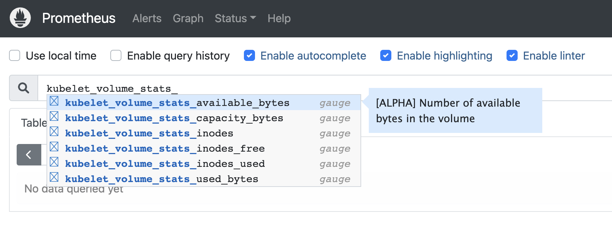
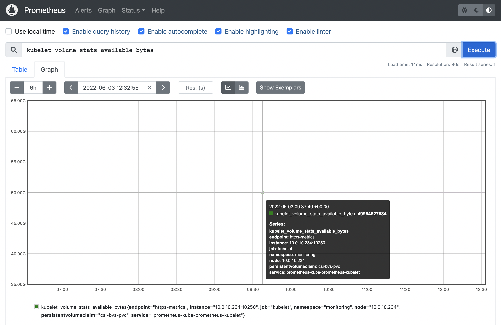

Support for CSI metrics
Persistent Volume에 대한 용량에 대한 모니터링 지원을 위해 Block Volume을 CSI 드라이버로 Persistent Volume Claims (PVCs)을 생성하는 경우 CSI 용량 통계를 위한 메트릭을 지원하게 되었습니다. 신규 클러스터는 물론, 기존 생성된 클러스터도 1.19 버전 이상에서 이미 기능활성화 되어 바로 사용할 수 있습니다.
업데이트 사항
CSI metris 지원
Block Volume을 CSI 드라이버로 Persistent Volume Claims (PVCs)을 생성하는 경우 CSI 용량 통계를 위한 메트릭을 지원합니다. 클러스터 생성시 기본 배포된 storageClassName: “oci-bv"을 사용하는 경우에 해당합니다.
- 지원 메트릭
kubelet_volume_stats_available_byteskubelet_volume_stats_capacity_byteskubelet_volume_stats_inodeskubelet_volume_stats_inodes_freekubelet_volume_stats_inodes_usedkubelet_volume_stats_used_bytes
-
Block Volme CSI 드라이버를 통해 Persistent Volume Claims (PVCs)을 생성합니다.
-
메트릭을 확인하기 위해 Prometheus를 설치합니다.
-
Prometheus UI에 접속합니다.
- 편의상 prometheus-kube-prometheus-prometheus의 서비스 타입을 LoadBalancer로 설정하였습니다.
-
해당 메트릭이 보이는 지 조회하면 아래와 같이 메트릭이 보입니다.

-
PVC 생성 시간 확인
$ kubectl get pvc csi-bvs-pvc -o yaml apiVersion: v1 kind: PersistentVolumeClaim metadata: annotations: kubectl.kubernetes.io/last-applied-configuration: | {"apiVersion":"v1","kind":"PersistentVolumeClaim","metadata":{"annotations":{},"name":"csi-bvs-pvc","namespace":"monitoring"},"spec":{"accessModes":["ReadWriteOnce"],"resources":{"requests":{"storage":"50Gi"}},"storageClassName":"oci-bv"}} pv.kubernetes.io/bind-completed: "yes" pv.kubernetes.io/bound-by-controller: "yes" volume.beta.kubernetes.io/storage-provisioner: blockvolume.csi.oraclecloud.com volume.kubernetes.io/selected-node: 10.0.10.234 creationTimestamp: "2022-06-03T09:34:49Z" ... -
첫 메트릭 수집시간

-
PVC 생성시간: 09:34:49와 첫 메트릭 값 수집시간:09:37:49로 Bitnami Prometheus Helm Chart의 scrape_interval이 기본 15초 또는 Prometheus 기본에 1분 이라고 하는 데 조금 더 지나야 되네요. 정확한 설정은 다음에 확인하는 걸로….
이 글은 개인으로서, 개인의 시간을 할애하여 작성된 글입니다. 글의 내용에 오류가 있을 수 있으며, 글 속의 의견은 개인적인 의견입니다.